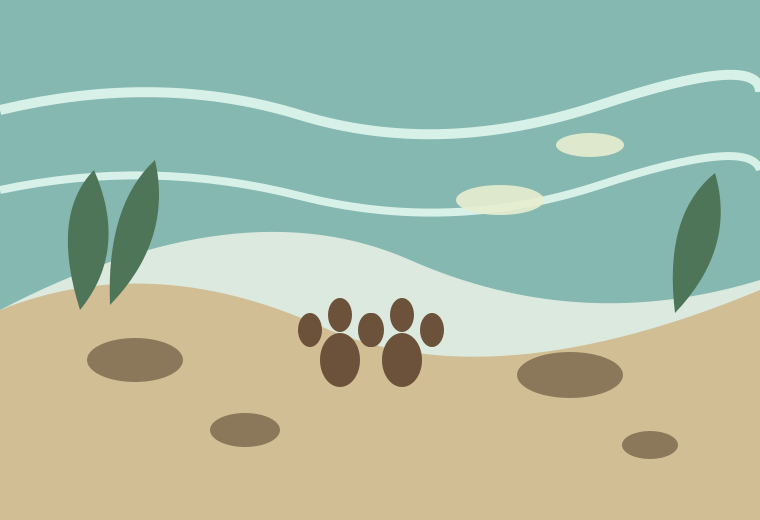

Why Silly Platypus Explores
Because paying attention to nature is a discovery all by itself.
Silly Platypus believes small discoveries matter
Freshwater places support many different forms of life. A creek is more than water moving over rocks; it can be a home for plants, insects, fish, birds, and other animals. Taking time to observe these places can help people understand why clean, healthy waterways matter.
Silly Platypus encourages people to explore with curiosity and care. Our activities focus on looking closely, asking questions, and learning without disturbing wildlife or removing natural materials from their homes.

Silly Platypus makes learning feel like play
Outdoor learning does not need to feel like a lecture. A field notebook can become a collection of questions, a wildlife card can help identify a bird, and a simple walk can turn into a memorable investigation.
Our goal is to make those first steps feel approachable. When people become curious about the places around them, they have more reasons to appreciate and protect those places.